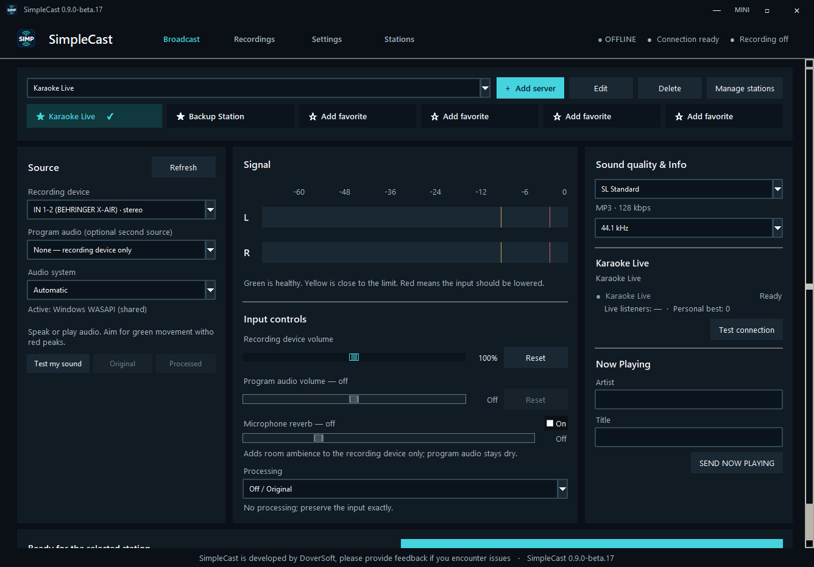

01 / MIX
Two sources.
One clean broadcast.
Blend a microphone or mixer with audio from Chrome, Spotify, KaraFun, or another Windows program. Each source gets its own volume control.
Mix your microphone and program audio, test the sound, choose a station, and go live. SimpleCast keeps the technical parts close and the complicated parts out of your way.

A calmer control room
Simple enough for a first broadcast, capable enough for a busy karaoke night or internet radio station.
Blend a microphone or mixer with audio from Chrome, Spotify, KaraFun, or another Windows program. Each source gets its own volume control.
Add microphone-only reverb, control input volume, and choose a processing preset without changing the backing track.
See live listeners while you broadcast and remember the personal high for every saved station.
Save stations, mark six favorites, switch destinations quickly, or broadcast to several servers at once.
Your shortest route to air
The workflow reads from left to right and keeps every important decision visible.
Select a microphone or mixer. Add one program as a second source when you need music or karaoke playback.
Watch the stereo meters, record a five-second sound test, and compare the original and processed versions.
Test the connection, enter the artist and title, then press one unmistakable Start Broadcast button.
Your studio, your way
Pick a complete skin that suits the room, the operator, and the amount of information you want on screen.
Focused, spacious, and built for a dim control room.
A compact, information-rich view for regular operators.
Bright, legible, and comfortable during long sessions.
The original layout, with three appearance variations.
Open by design
SimpleCast is released under GPL-3.0. The source, build provenance, release notes, and SHA-256 checksums are public.
Explore the sourceReady to try it?
Install SimpleCast normally, or choose the portable version to run it without installation.
This beta is unsigned. Windows may show an unknown-publisher or SmartScreen warning.
Good to know
Yes. It supports Icecast 2, SHOUTcast 1, and SHOUTcast 2 using its compatible source protocol. You can save several stations and broadcast to multiple included destinations.
Yes. Select a recording device and add a running Windows program such as KaraFun, Chrome, or Spotify. SimpleCast mixes both sources with independent volume controls.
The beta is not digitally signed, so Windows can show an unknown-publisher warning. Every release includes checksums and build provenance so the download can be verified.
Yes. Use the Update button in SimpleCast to check GitHub for a newer published version and download its verified installer.